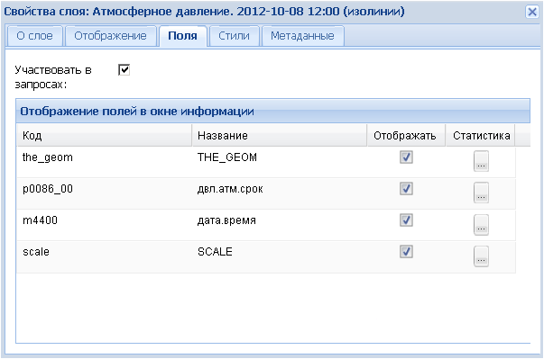
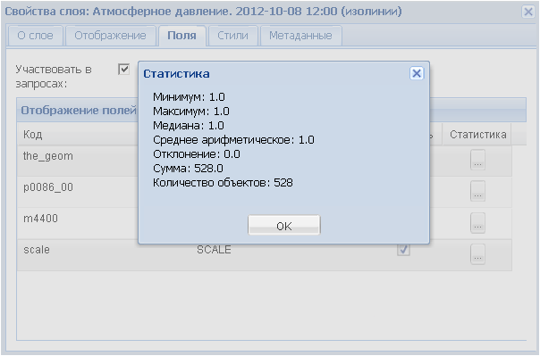
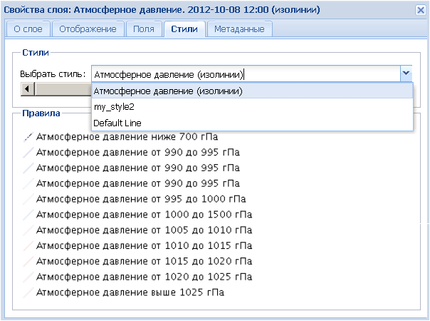
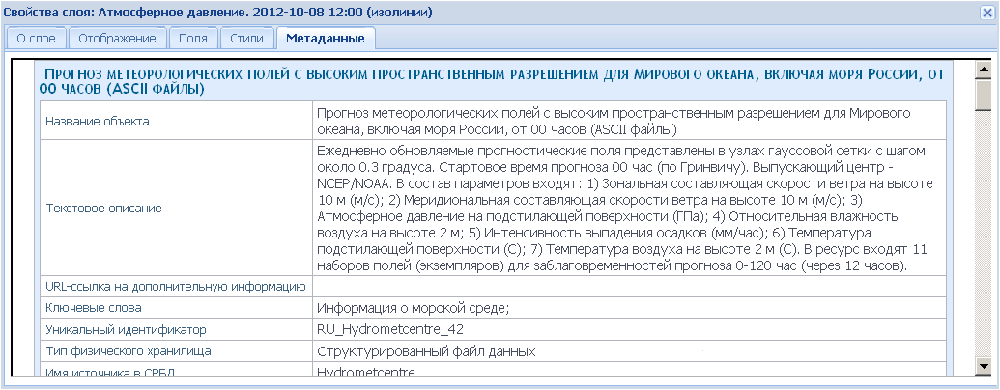
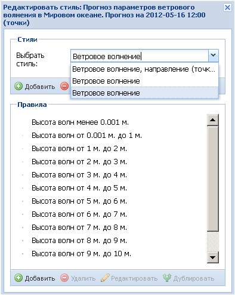
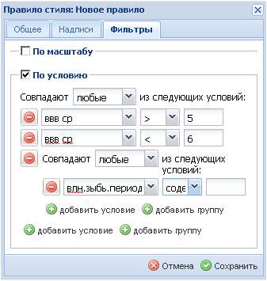

Кнопки управления
Закладка Слои имеет свои кнопки управления, расположенные на панели в верхней части окна. Они активируются нажатием и имеют всплывающие подсказки.
- Добавить слой. Служит для подключения тематических слоев из различных сервисов. Аналогична команде меню Слой – Добавить.
- Удалить слой. Служит для удаления ненужных тематических слоев, картооснов и стэков анимации из соответствующих папок. Для этого необходимо засветить ненужный слой в списке, нажав курсором на его название, и нажать на кнопку.
- Свойства слоя. Выводит на экран дополнительно окно Свойства слоя: …, с помощью которого возможно регулировать отображение тематического слоя на экране.
В закладке О слое приводятся метаданные, идентичные метаданным, приводимым в окне Доступные слои (см. Слой – Добавить), а также всплываемым в папке Слои закладки Слои.
Закладка Отображение позволяет:
- регулировать прозрачность слоя с помощью передвижения ползунка (от 100% до 0%),
- изменять формат, выбрав его из ниспадающего списка,
- временно отключать/включать отображение фона – картоосновы (это работает при отключенном кэше),
- загружать карту по частям с целью ускорения ее отображения. Последнюю опцию нужно отключать в ряде случаев, чтобы избежать нежелательного дублирования условных знаков и надписей.
Закладка Кэш дает возможность включать и отключать кэширование. Включение кэша ускоряет отображение слоев карты.
Закладка Поля служит для регулирования числа видимых полей при работе с пространственными данными. Пользователь может отметить галочкой в колонке Отображать только те поля, которые необходимы ему для получения информации об объектах, а остальные – скрыть.

Для числовых атрибутов можно получить общую статистику, нажав пиктограмму в колонке Статистика.

Закладка Стили дает возможность выбора стиля (условных обозначений) для отображения слоя. Стиль выбирается из ниспадающего списка возможных вариантов в окошке Выбрать стиль. Варианты стиля назначаются при публикации сервиса.

Закладка Метаданные служит для отображения полной характеристики слоя.

 - Редактировать стиль. Служит для изменения легенды (условных обозначений) объектов в тематических слоях тех сервисов, где данная функция доступна. Если функция доступна, то кнопка будет яркой.
- Редактировать стиль. Служит для изменения легенды (условных обозначений) объектов в тематических слоях тех сервисов, где данная функция доступна. Если функция доступна, то кнопка будет яркой.
Для редактирования необходимо активировать слой нажатием левой кнопки мыши (шрифт названия слоя станет жирным). При нажатии на пиктограмму появляется дополнительное окно Редактировать стиль: …, в котором имеются два поля – Стили и Правила.
В поле Стили осуществляется выбор из ниспадающего списка других легенд, существующих для этого слоя.

Если ни один из имеющихся в списке стилей не устраивает пользователя, он может создать свой собственный стиль. Для этого нужно воспользоваться командой Добавить.
В появившемся окошке можно дать заголовок пользовательскому стилю и по желанию его описать. Если заголовок не давать, то приложение сохранит этот стиль по названию слоя.
Для удаления стиля его нужно выбрать в окошке Выбрать стиль и нажать команду Удалить. В случае необходимости изменить заголовок или описание стиля следует воспользоваться командой Редактировать. Команда Дублировать позволяет сделать резервную копию стиля и продолжить его редактирование, имея при этом возможность всегда вернуться к начальному варианту.
Поле Правила служит для создания/изменения правил стиля (пунктов легенды). Первое правило стиля автоматически создается при создании заголовка нового стиля, последующие правила добавляются командой Добавить.
Команды Удалить, Редактировать, Дублировать поля Правила аналогичны командам поля Стили, только относятся к конкретному выбранному правилу стиля.
При пользовании командой Редактировать появляется дополнительное окно Правила стиля, в котором осуществляются настройки нового или существующего правила.
Дополнительное окно Правила стиля имеет три закладки.
В закладке Общее настраиваются следующие параметры: дается название данному правилу, выбирается символ (круг, квадрат, треугольник и т.д.), устанавливается размер символа в пикселях и поворот символа в градусах, выбирается цвет заливки символа и степень ее прозрачности, а также стиль обводки символа (сплошная, пунктирная и т.д.), цвет, толщина и прозрачность этой обводки.
В закладке Надписи в случае необходимости настраиваются параметры надписей для символов данного правила.
В закладке Фильтры задаются условия включения объектов слоя в данное правило стиля. Существует два вида фильтров – по масштабу и по условию (значениям атрибутов объектов).
Фильтры по масштабу используются для того, чтобы ограничить отображение объектов определенным масштабом карты. Можно задать минимальный масштаб, при котором объекты данного правила будут отображаться, поставив галочку в соответствующем окошке и выбрав из списка или введя в ручную необходимое числовое значение масштаба. Аналогичным образом задается максимальный ограничивающий масштаб, либо одновременно минимальный и максимальный.
Фильтры по условию используются для задания параметров включения объектов слоя в данное правило стиля. Для этого в ниспадающем списке окошка выбирается атрибутивное поле, по которому вводится ограничение, в смежном окошке выбирается тип оператора, в следующем – вводится значение.
Если одного условия для задания параметров не достаточно, можно добавить их необходимое количество с помощью опции Добавить условие.
Для создания более сложных условий можно воспользоваться опцией Добавить группу, которая позволяет ввести новой атрибутивное поле в качестве дополнительного ограничения и тоже задать ему параметры.

Завершив редактирование первого правила стиля, аналогичным образом настраивают последующие правила.
Чтобы увидеть результат редактирования стиля в рабочем окне карты необходимо проверить, чтобы кэширование слоя было отключено (закладка Кэш в свойствах слоя).